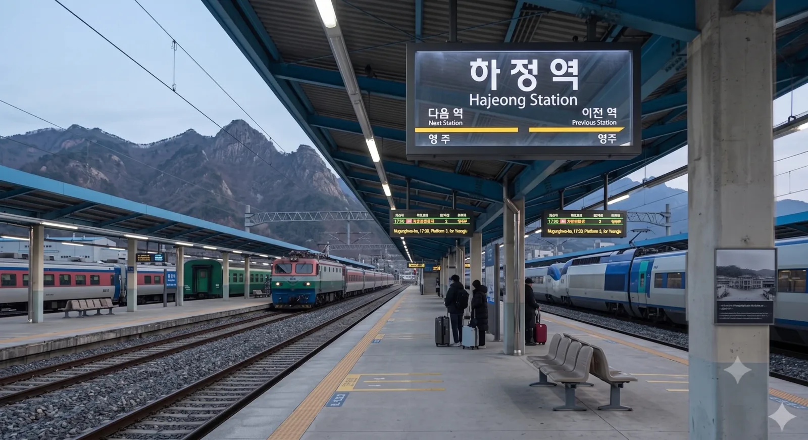

| 폐역 |
석창 -
-1987
동석
-
폐역
등전
-
하정 -
-2008
해성
-
-2020
내덕
-
-1987
산서
-
전진
|
매덕선의 철도역. 덕빈남도 하정시 규산동 288번지에 위치해 있다.
과거 '검은 노다지'라 불리며 석탄 산업으로 전성기를 누렸던 하정시의 관문역이다. 1970년대 인구 20만 명 시절에는 화물과 여객으로 북새통을 이루었으나, 폐광 이후 도시가 쇠퇴하며 현재는 다소 한산해진 상태이다. 그럼에도 하정시의 유일한 철도역이자 교통 요충지(규산동)로서 여전히 지역 경제의 중심축을 담당하고 있다. 새마을호와 무궁화호가 정차한다.
역사는 과거의 영광을 반영하듯 도시 규모에 비해 상당히 크고 웅장한 편이다. 대합실 천장이 높고 광장이 넓게 조성되어 있으나, 이용객이 줄어들어 지금은 다소 썰렁한 느낌을 주기도 한다. 역 주변은 하정시의 행정 중심지인 규산동으로, 물류창고와 산업단지가 인접해 있다.
전 역인 석창역과는 18.31km, 다음 역인 전진역과는 20.41km 떨어져 있어 역간 거리가 매우 길다. 이는 하정시가 험준한 산악 지형인 탓도 있지만, 과거 존재했던 중간 간이역들이 모두 폐역되었기 때문이다. 실제로 석탄 산업 전성기에는 석창 방면으로 2개, 전진 방면으로 3개의 간이역이 있었으나, 산업 쇠퇴와 인구 감소로 인해 모두 문을 닫고 현재의 긴 역간 거리가 형성되었다.
과거에는 석탄 관련 종사자와 그 가족들로 붐볐으나, 현재는 지역 주민들의 시외 이동과 관광객 수요에 의존하고 있다.
특이한 점은 시(市) 단위의 중심역임에도 불구하고, 인접한 군(郡) 단위 역인 석창역보다 이용객이 적다는 것이다. 이는 하정시 인구(약 7.7만 명)가 석창군(약 8만 명)보다 적을 뿐만 아니라, 석창군의 IT/물류 산업 발달로 유동 인구가 급증한 탓에 역전 현상이 발생했기 때문이다. 시가 군한테 졌다
2면 4선의 쌍섬식 승강장을 갖추고 있으며, 과거 석탄 열차 대피 및 조성을 위해 선로 유효장이 매우 길다.

| 번호 | 노선 및 열차 등급 | 행선지 |
|---|---|---|
| 1 · 2 | 매덕선 (새마을호 · 무궁화호) | 석창·매성·비천항 방면 |
| 3 · 4 | 매덕선 (새마을호 · 무궁화호) | 전진·덕주·운진항 방면 |
역 광장에서 하정시내 각 지역(하정동, 해성동 등)과 별당읍, 면 지역으로 향하는 시내버스를 이용할 수 있다.